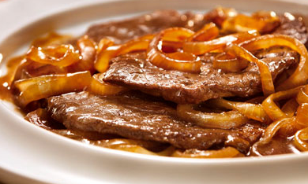

Bife acebolado

Ingredientes:
- Bife de sua preferência
- Cebola fatiada
- Oléo ou azeite
- Sal e pimenta do reino a gosto
Modo de preparo:
- Aqueça uma frigideira com oléo em fogo algo
- Coloque o bife na frigideira
- Tempere com sal e pimenta a gosto
- Não aperte ou fure a carne
- Deixe dourar de um lado e depois vire e deixe dourar do outro
- Após dourar, retire a carne e coloque em um prato
- Ainda com a frigideira quente, coloque a Cebola e mexa para tirar a crosta do fundo da frigideira ( A crosta é onde está todo o sabor)
- Após a cebola dourar, retire e sirva junto ao bife